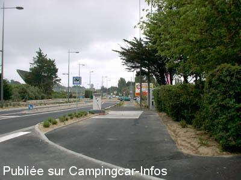

AS = Aire de services uniquement de :
LE POULIGUEN
(N° 826)
Accès/adresse :
Boulevard de l'Atlantique, D45
Face au Camping Les Mouettes
44510 LE POULIGUEN
Face au Camping Les Mouettes
44510 LE POULIGUEN
Latitude : (Nord) 47.27351° Décimaux ou 47° 16′ 24′′
Longitude : (Ouest) -2.43972° Décimaux ou -2° 26′ 22′′
Tarif : 2014
Eau : 2 €
Paiement par monnayeur
Type de borne : Autre
Services :


Autres informations :
Ouvert du 01/04 au 30/09
Tel : +33(0)240 150 807
http://www.lepouliguen.fr

Le 11/07/2005 par J.P. Leclère
de
rv
le 29/04/2014 :
passe en avril 2014 2 euros a la borne et rien pas une goutte d'eau la borne ne fonctionne pas !!
passe en avril 2014 2 euros a la borne et rien pas une goutte d'eau la borne ne fonctionne pas !!
de
jym17
le 02/10/2011 :
je suis repassé à cet air, ils ont mis une borne ( payante à une centrale)pour deux emplacements
ceux-ci sont goudronner, et tres bien délimiter, les places sont"chéres" car peut de mouvement, il n'y a pas e limite de temps e stationnement, il faut se replier sur le parking du port au Pouliguen
je suis repassé à cet air, ils ont mis une borne ( payante à une centrale)pour deux emplacements
ceux-ci sont goudronner, et tres bien délimiter, les places sont"chéres" car peut de mouvement, il n'y a pas e limite de temps e stationnement, il faut se replier sur le parking du port au Pouliguen
de
manu
le 25/08/2011 :
Impossible de stationner , je vous conseil le parking du port ,il y a une dixaine de place pour le camping car , pas de branchement éléctrique mais il y les toilettes tres propre et tres calme la nuit
Impossible de stationner , je vous conseil le parking du port ,il y a une dixaine de place pour le camping car , pas de branchement éléctrique mais il y les toilettes tres propre et tres calme la nuit
de
jym17
le 17/11/2010 :
passage le 11/11/10, en fait l'air se situe le long du port du coté La BAule, il n'y a pour l'instant que des poubelles et l'emplacement pour une borne et des plots qui font deviner la mise en place d'un péage, des que les installations seront terminés, les camping-cars doivent se garer à la queue leuleu le long du stade et aller au Pouliguen pour les vidanges et le ravitaillement en eau (payant)
plage de la baule à 500m par une allée pietonne
passage le 11/11/10, en fait l'air se situe le long du port du coté La BAule, il n'y a pour l'instant que des poubelles et l'emplacement pour une borne et des plots qui font deviner la mise en place d'un péage, des que les installations seront terminés, les camping-cars doivent se garer à la queue leuleu le long du stade et aller au Pouliguen pour les vidanges et le ravitaillement en eau (payant)
plage de la baule à 500m par une allée pietonne
de
Noël Gouriou
le 13/10/2009 :
L'aire de services est effectivement un peu chère (50L pour 2€) ! Par contre, je veux conseiller un parking utilisé par beaucoup de camping-caristes et qui est très bien placé. Il s'agit du "parking du port" au Pouliguen, il est très bien indiqué et il est courant de trouver une dizaine de CC. Ce parking est à proximité du port et donc sympa pour les balades et proche de La Baule (à vélo par exemple). §
L'aire de services est effectivement un peu chère (50L pour 2€) ! Par contre, je veux conseiller un parking utilisé par beaucoup de camping-caristes et qui est très bien placé. Il s'agit du "parking du port" au Pouliguen, il est très bien indiqué et il est courant de trouver une dizaine de CC. Ce parking est à proximité du port et donc sympa pour les balades et proche de La Baule (à vélo par exemple). §
de
M Lefebvre
le 12/08/2007 :
Bonjour. Le tarif est de 2€ les 50 litres d'eau !!
Bonjour. Le tarif est de 2€ les 50 litres d'eau !!
de
Dan 78
le 23/04/2007 :
Bjr de passage en Avril 2007. La ville est toujours aussi jolie mais comme la majorité des villes de Loire-Atlantique, les c.cars n'ont pas encore leurs place. Cela va peut-être changer ...
Bjr de passage en Avril 2007. La ville est toujours aussi jolie mais comme la majorité des villes de Loire-Atlantique, les c.cars n'ont pas encore leurs place. Cela va peut-être changer ...
de
Bourry
le 21/04/2006 :
Impossible de stationner. Pas d'indication pour ce parking.
Impossible de stationner. Pas d'indication pour ce parking.
de
Leclère Jean-Pierre
le 11/07/2005 :
Adresse inexacte: D45 Boulevard de l'Atlantique,face au camping des mouettes.
Stationnement impossible. Uniquement UN camping-car en attente pour l'accès à l'aire.
Borne Raclet Tarif 2€
Coordonnées N 47°16.411'
W 2° 26.383
Adresse inexacte: D45 Boulevard de l'Atlantique,face au camping des mouettes.
Stationnement impossible. Uniquement UN camping-car en attente pour l'accès à l'aire.
Borne Raclet Tarif 2€
Coordonnées N 47°16.411'
W 2° 26.383
de
Jacques &Josiane
le 16/05/2005 :
Cette aire est transférée entre le camping "Les Mouettes" et le parking de Vétimarché, boulevard de l'Atlantique. Il n'y a pas de stationnement possibble. 2€ pour l'eau.
Cette aire est transférée entre le camping "Les Mouettes" et le parking de Vétimarché, boulevard de l'Atlantique. Il n'y a pas de stationnement possibble. 2€ pour l'eau.